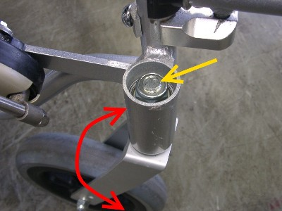

車いす直進性の調整
車いすがうまく動いてくれないというお話がよく届きます．まっすぐ進もうとしているのに右または左にまがってしまうというお話が一番多いようです．車いすをお借りして乗ってみると確かにその通り，という場合は原因の多くが車いすにあるようです．例えばタイヤの空気が左右アンバランスなことも原因の一つです．また使用期間が長かったり，衝突などのショックが多いとフレームのゆがみが原因かも知れません．このような場合の対処法は，「車いすがまがる」をご覧になって下さい．
車いすを試乗しても，私ではその不具合が発生しないこともあります．原因としては左右の腕の車いすをこぐ力や形のアンバランス，姿勢の左右非対称などが考えられます．また廊下の床面が決しも平坦でないことも原因の一つになるかも知れません．またこのことは，長い廊下床面の反射光を見れば確認できます．
ここで，車いすは悪くないとか，しかたがないと結論づけるのは簡単ですが，もう少し何とかしようとした事例をここでご紹介します．
車いすの前輪キャスタ軸を固定しているナット（下写真，黄色矢印）を締めて，フォークの回転（下写真，赤矢印）を渋くする．そして車いすの方向転換（回頭）性能を多少犠牲にして，直進安定性を増して問題を解決する．以上がこのページのあらすじです．

対象の方は若い脊損の方で，自動車運転の経験もあったので，「ハンドルの切れを重くして，直進安定性を増す．ベッドまわりの小回りでデメリットもあるかも知れないが，長い廊下ではメリットを期待できる」との説明でご理解いただけました．
試走と調整を２，３回繰り返し，ナットの微調整をおこない，この方の好みのセッティングを出すことができました．やや長めの入院期間中，快適に車いすをお使いになりました．
ここで紹介した車いすは，カワムラサイクルのＫＡー８００型です．この車いすのキャスタは写真のような構造をしていますが，従来日本車で広く使われてきた，差し込み型キャスタではここで紹介したことはできません．構造と原理を十分理解した上で取り組まれることをお勧めします．
また写真のナットを締めるには，ボックスレンチが必要です．
2018/3/19 UTF-8 に変更
09/10/14 公開